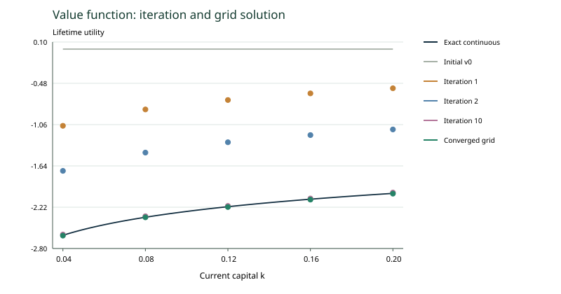
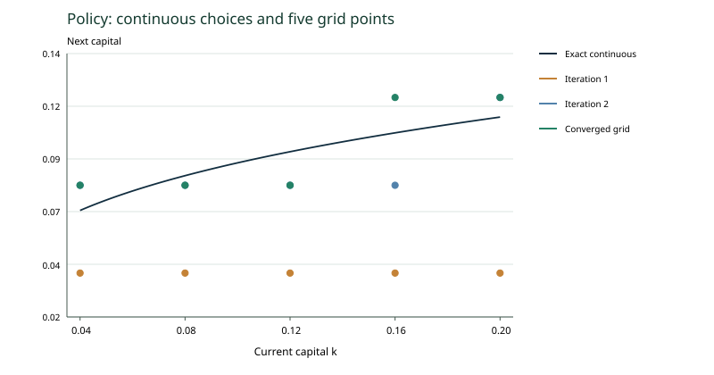

收敛后的五点解：重画原页图示
来源：Lecture4.pdf，PDF 第 43–45 页。
本步讲解
以最大更新差小于
为停止标准，使用未舍入值计算，第 56 次迭代停止。结果为：
|
|
|
|
|
|
| 网格
|
|
|
|
|
|
| 连续精确
|
|
|
|
|
|
| 网格
|
|
|
|
|
|
| 连续精确
|
|
|
|
|
|
离散值略低，因为限制选择集合不会提高最优价值。迭代过程中目标值为负，加入未来负效用会使数值下降，不能误解为“算法让家庭变得更不理性”。

值函数迭代与连续解析值：实线为连续解，彩色点为五点网格各轮结果

政策比较：连续解析曲线与五点网格政策
原图的编辑处理： 第 45 页标为收敛政策的平滑曲线与第
43
页列出的五个离散政策值并不逐点一致。本课依据已复算的表格重绘，网格政策只画离散点，不声称在网格之间也允许任意控制。第
44
页“
只看当前”也需精确区分：
是初始续接猜测，第一次更新
才只计算当前效用。
例题 A · 编辑示范
在
比较网格值和精确值，并解释差的符号。
A 解答
查看示范解答
网格值约
，精确值约
，网格减精确为
。限制投资选择使最高可得终身效用弱下降。
练习 B · 补充练习
新增练习 · 训练本课已演示的方法
在
比较两种最优资本与值函数；值差很小是否意味着政策完全一样？
B 解答
尝试后查看参考解
网格资本
，连续资本约
，相差约
；值差约
。目标在最优点附近可能较平坦，所以小值误差不等于零政策误差。
一句小结
收敛后仍有网格误差；用离散点表达离散政策，避免平滑图形造成误读。